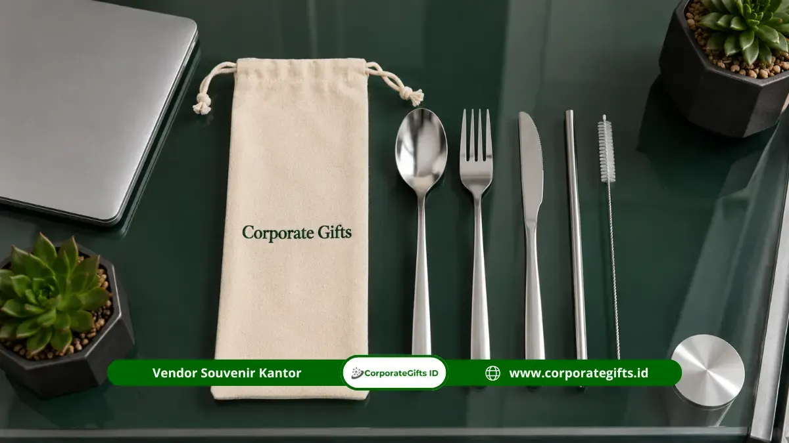

Corporate Gifts ID - Seminar kits eco-friendly adalah paket perlengkapan seminar berbahan daur ulang dan reusable, seperti block note kertas daur ulang, pulpen daur ulang, tote bag kanvas, dan cutlery set, yang menggantikan barang sekali pakai tanpa mengurangi fungsi dan tampilan profesional acara kantor. Kami menyediakan solusi pengadaan paket seminar kit fungsional yang siap mendukung berbagai agenda konferensi, rapat koordinasi, hingga pelatihan berskala nasional.
Paket cenderamata ini mendukung inisiatif keberlanjutan perusahaan sekaligus tetap praktis digunakan peserta selama dan setelah acara berlangsung.
Poin Kunci Seminar Kits Ramah Lingkungan:
- Pengurangan Sampah Plastik: Menggantikan material sekali pakai dengan bahan daur ulang bersertifikasi atau perlengkapan reusable.
- Kelengkapan Fungsional: Produk umum mencakup buku catatan kraft, pulpen bambu, tote bag kanvas, dan set alat makan stainless steel.
- Penguatan Narasi ESG & CSR: Mendukung perwujudan tata kelola ramah lingkungan yang terdokumentasi dalam laporan keberlanjutan tahunan.
- Tampilan Tetap Elegan: Standar desain visual rapi memastikan kredibilitas profesional instansi penyelenggara tetap terjaga di mata peserta.
Tren Seminar Kits Eco-Friendly di Era Modern
Kesadaran terhadap isu kelestarian lingkungan hidup kian memengaruhi preferensi pengadaan perlengkapan korporat, termasuk dalam pemilihan paket seminar kit untuk agenda internal maupun pertemuan eksternal.
Kecenderungan ini berjalan selaras dengan semakin banyaknya entitas bisnis dan institusi publik yang mengintegrasikan prinsip Environmental, Social, and Governance (ESG) ke dalam tata kelola operasional mereka. Seminar kits eco-friendly menjadi representasi konkret bagi manajemen untuk menunjukkan komitmen nyata kepada para delegasi, pemegang saham, dan mitra strategis.
Pemanfaatan material ramah lingkungan pada perlengkapan konferensi tidak hanya mereduksi volume limbah pascaacara berskala masif, melainkan juga mengomunikasikan visi perusahaan secara langsung lewat media kerja harian yang dibawa pulang oleh para peserta.
Katalog Produk Ramah Lingkungan Corporate Gifts
Corporate Gifts menghadirkan aneka kombinasi perlengkapan ramah lingkungan yang fungsional tanpa mengorbankan mutu bahan maupun sentuhan estetika:
1. Block Note dan Pulpen Berbahan Daur Ulang
Buku catatan jilid spiral kertas daur ulang (kraft paper) dan pulpen berbahan serat gandum (wheat straw) atau bambu alami menjadi fondasi utama seminar kit. Produk ini memiliki daya guna optimal untuk mencatat materi presentasi, dengan jejak karbon yang jauh lebih rendah dibandingkan kertas konvensional.
2. Totebag Kanvas Pengganti Kantong Plastik
Tas tote bag berbahan kain kanvas katun tebal atau blacu berserat kuat menggantikan kantong plastik sekali pakai. Selain kokoh menampung dokumen seminar, tote bag ini dirancang modis agar tetap dipakai peserta dalam rutinitas kerja sehari-hari setelah acara usai.
3. Cutlery Set dan Sedotan Reusable
Paket sendok garpu lipat dan sedotan berbahan stainless steel food grade atau bambu sangat relevan untuk acara yang menyertakan sesi makan siang atau rehat kopi (coffee break). Perlengkapan ini secara instan mengurangi penumpukan sampah plastik katering.

Sentuhan tekstur kayu alami dan kertas kraft menghadirkan kesan hangat, minimalis, dan berkesadaran lingkungan tinggi.
Tabel Komparasi Seminar Kits: Konvensional vs Eco-Friendly
Berikut perbandingan nilai manfaat antara paket seminar konvensional dengan paket eco-friendly modern:
| Komponen Seminar Kit | Paket Konvensional Sekali Pakai | Paket Eco-Friendly Reusable | Manfaat Jangka Panjang |
|---|---|---|---|
| Tas Pembungkus | Kantong plastik tipis / tas kresek | Tote bag kanvas katun / blacu tebal | Digunakan berulang kali untuk belanja dan kerja harian |
| Media Catatan | Brosur kertas glossy sekali pakai | Buku jurnal daur ulang kraft tebal | Masa simpan catatan lebih lama dan mudah diurai tanah |
| Alat Tulis | Pulpen plastik murah mudah macet | Pulpen bambu / biodegradable wheat straw | Mengurangi residu mikroplastik saat dibuang kelak |
| Perlengkapan Konsumsi | Sendok garpu plastik & air kemasan cup | Cutlery set stainless & tumbler reusable | Zero-waste event dan mendukung pola hidup sehat |
Bagaimana Seminar Kits Eco-Friendly Mendukung Nilai ESG?
Seminar kits eco-friendly memegang peran penting dalam menyokong prinsip keberlanjutan korporasi melalui penurunan ketergantungan pada rantai pasok barang sekali buang:
- Reduksi Jejak Karbon Acara: Setiap cenderamata reusable yang diserahkan berkontribusi memotong volume timbulan sampah seminar berskala ratusan hingga ribuan orang.
- Data Dukung Laporan Keberlanjutan (Sustainability Report): Kebijakan pengadaan suvenir ramah lingkungan dapat dijadikan materi publikasi nyata dalam laporan audit ESG atau tanggung jawab sosial korporat (CSR).
- Kredibilitas Komitmen Perusahaan: Konsistensi menyuguhkan merchandise kantor yang bertanggung jawab memperkokoh integritas brand di hadapan publik dan penanam modal.
Tips Memilih Seminar Kits Ramah Lingkungan untuk Kantor
Agar pengadaan paket seminar kit berjalan efektif dan tepat sasaran, terapkan empat langkah kurasi praktis berikut:
- Pilih Item Esensial: Utamakan produk yang mutlak digunakan peserta selama forum, seperti buku catatan, alat tulis, dan wadah jinjing.
- Periksa Kualitas Material: Pastikan serat kain tote bag dan mata pena berfungsi halus serta tahan banting.
- Selaraskan dengan Konsep Acara: Tambahkan perlengkapan makan reusable jika agenda menyertakan sesi workshop sehari penuh.
- Pertahankan Kerapian Visual: Terapkan logo korporat dengan teknik grafir laser minimalis atau sablon berbasis air (water-based ink) yang ramah lingkungan.
Pertanyaan Seputar Seminar Kits Eco-Friendly (FAQ)
Kesimpulan dan Solusi Pengadaan
Seminar kits eco-friendly menjadi pilihan paling relevan bagi organisasi modern yang bertekad menyatukan kelancaran operasional acara dengan tanggung jawab pelestarian lingkungan. Menghadirkan paket ramah lingkungan yang fungsional adalah cara terbaik meninggalkan kesan mendalam dan berharga bagi setiap delegasi yang hadir.

Ditulis oleh: Arinda Zakia
Senior Corporate Gifting SpecialistSpesialis kurasi paket suvenir korporat ramah lingkungan dan konsultan pengadaan merchandise B2B di CorporateGifts.ID. Berpengalaman mendampingi ratusan instansi pemerintah dan perusahaan multinasional dalam merancang seminar kit berstandar ESG.
Lihat Profil Lengkap & Panduan Lainnya